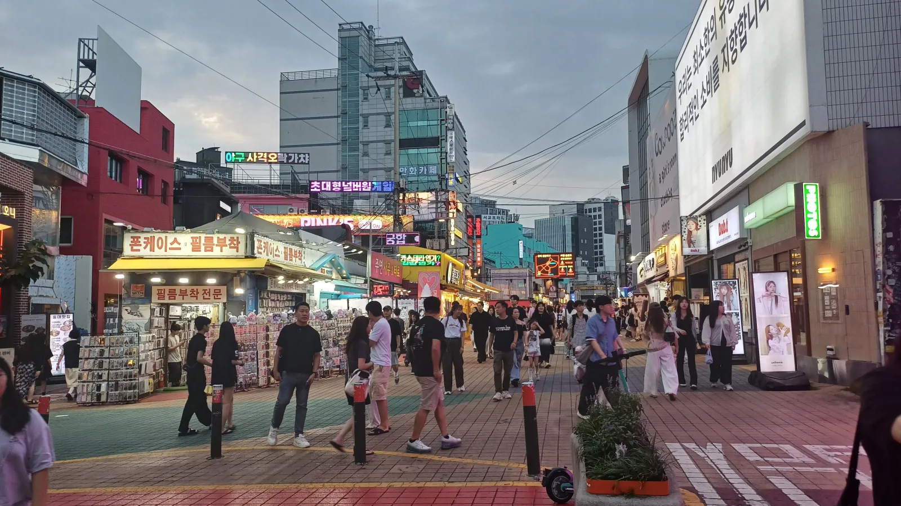
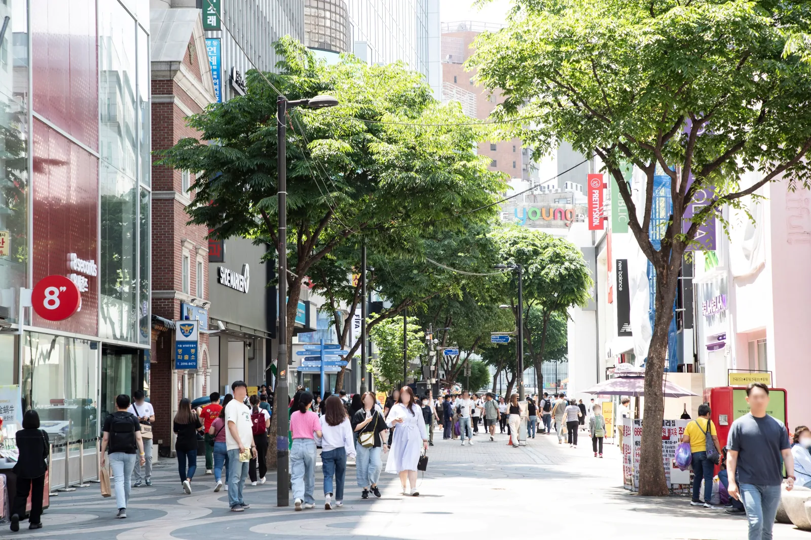
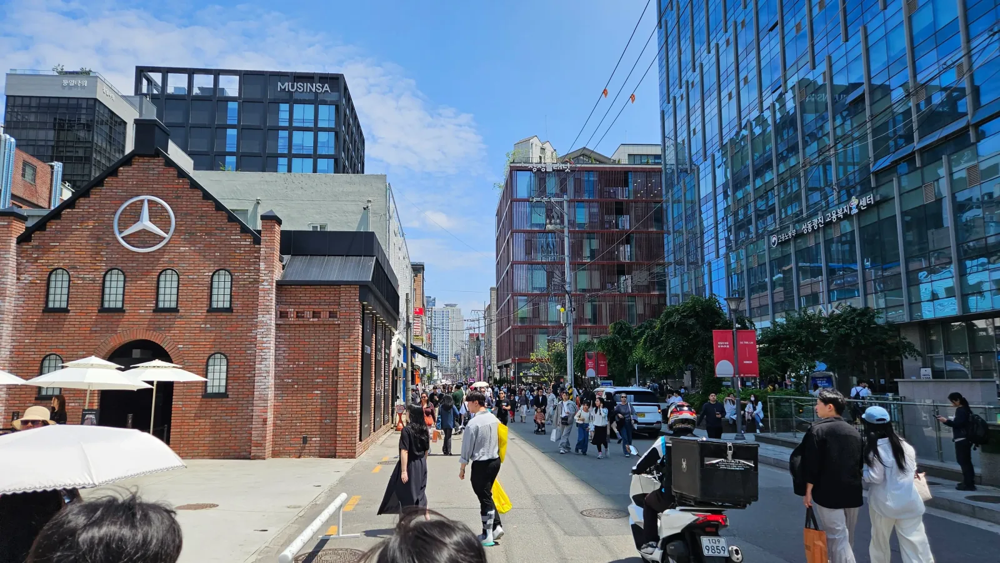
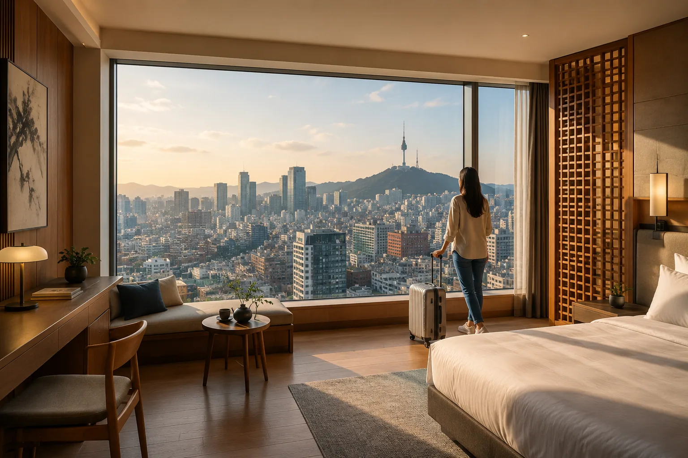
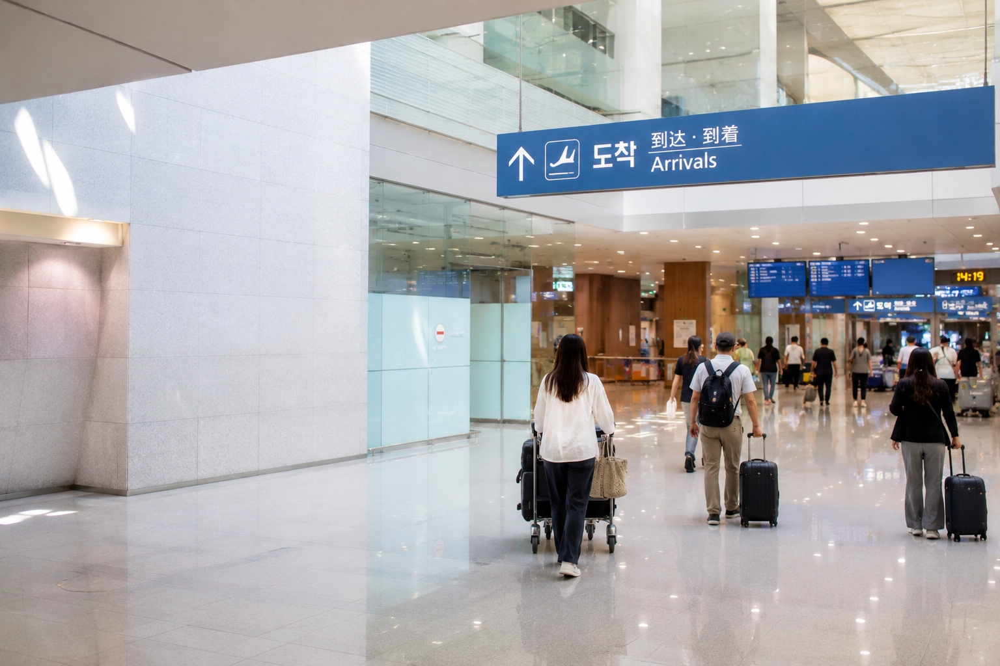
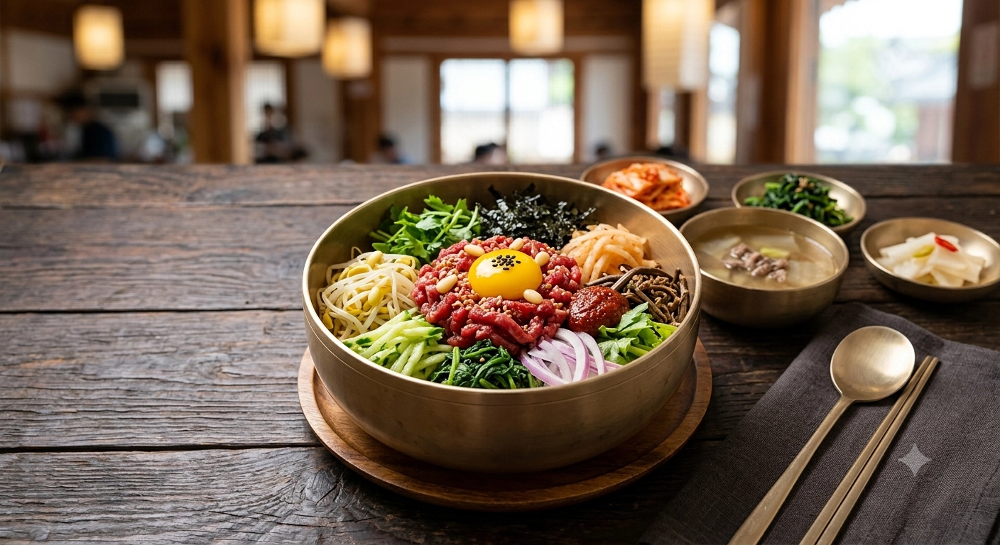
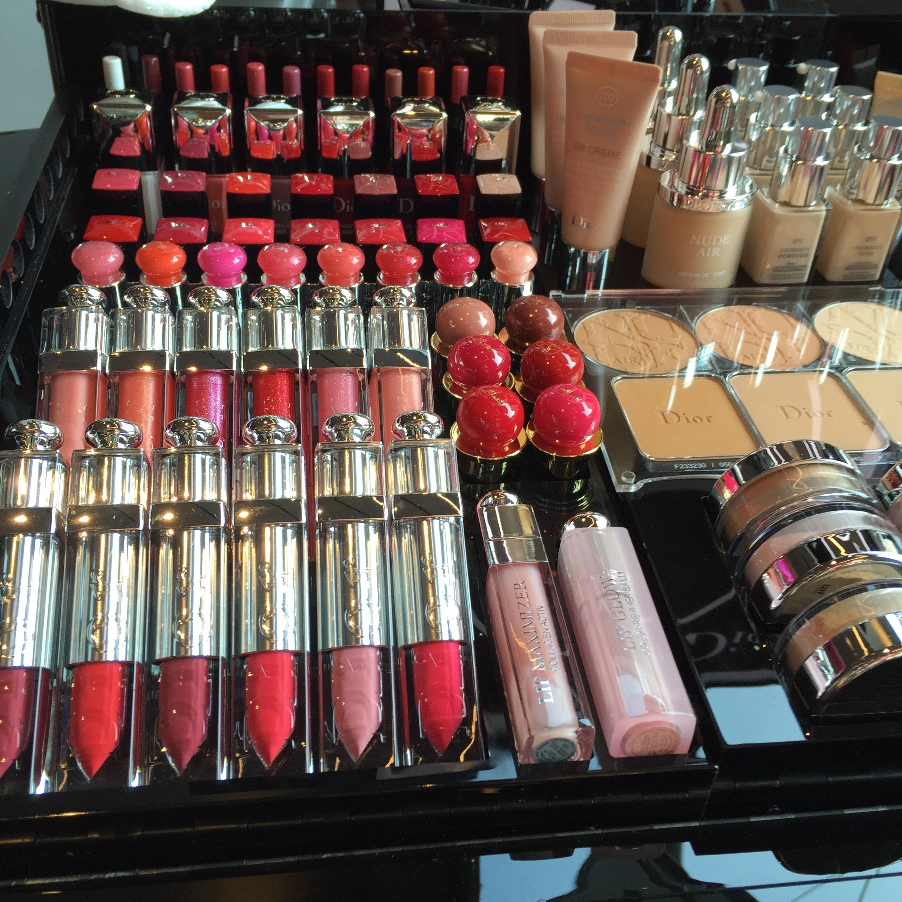

ย่านที่คึกคักยามค่ำ
ฮงแด
คาเฟ่ย่านยอนนัม ร้านค้าอิสระ และถนนที่ยังคึกคักหลังมื้อเย็น เหมาะจะเผื่อเวลาเดินเที่ยวหากช่วงค่ำเป็นส่วนสำคัญของทริป
สำรวจฮงแดเที่ยวเกาหลี · ย่านต่าง ๆ ในโซล
แต่ละย่านของโซลทำให้การจัดเวลาในหนึ่งวันต่างกัน ลองดูว่าอยากทำอะไร จะจบวันแถวไหน และสะดวกเดินทางไกลแค่ไหน แล้วค่อยเปิดอ่านคู่มือของแต่ละย่านอย่างละเอียด

ย่านที่คึกคักยามค่ำ
คาเฟ่ย่านยอนนัม ร้านค้าอิสระ และถนนที่ยังคึกคักหลังมื้อเย็น เหมาะจะเผื่อเวลาเดินเที่ยวหากช่วงค่ำเป็นส่วนสำคัญของทริป
สำรวจฮงแด
ใจกลางโซล
ทั้งช็อปปิง เที่ยวสถานที่สำคัญในตัวเมือง และกลับที่พักระหว่างวันได้สะดวก เป็นจุดเริ่มต้นที่วางแผนเที่ยวโซลครั้งแรกได้ง่าย
สำรวจเมียงดง
คาเฟ่และร้านป๊อปอัป
ถนนสายอุตสาหกรรมเก่าที่มีอาคารอิฐแดง ร้านงานออกแบบ และร้านป๊อปอัปที่เปลี่ยนไปเรื่อย ๆ ควรเผื่อเวลาเดินดูมากกว่าจะรีบแวะทีละจุด
สำรวจซองซูคู่มือย่านต่าง ๆ ที่ใช้วางแผนได้จริง · มีลิงก์ทุกหน้า

พักที่ไหนดี
ย่านที่เหมาะขึ้นอยู่กับแผนเที่ยวแต่ละวัน เส้นทางจากสนามบิน และวิธีกลับที่พักตอนกลางคืน แม้ได้ราคาโรงแรมดี แต่ก็อาจไม่คุ้มหากต้องเดินทางลำบากทุกวัน
การพักในย่านที่เดินทางสะดวกอาจช่วยประหยัดเวลาได้มากกว่าการเลือกโรงแรมจากราคาเพียงอย่างเดียว นอกจากรถไฟใต้ดินแล้ว ยังต้องคิดถึงการเดินทางจากสนามบิน การกลับดึก ถุงช็อปปิง และจำนวนครั้งที่ต้องข้ามเมืองด้วย
ค้นหาย่านที่เหมาะสำหรับพักวางแผนการเดินทาง
ไม่จำเป็นต้องวางแผนเที่ยวเกาหลีครบทุกวันก่อนบิน แต่มีสามเรื่องที่ควรตกลงให้เรียบร้อยก่อน ได้แก่ จะพักที่ไหน โทรศัพท์จะใช้อินเทอร์เน็ตอย่างไร และจะเดินทางจากสนามบินไปที่พักแรกอย่างไร
อินเทอร์เน็ตมือถือ
อินเทอร์เน็ตมือถือมีประโยชน์แทบจะทันทีหลังลงเครื่อง ทั้งดูแผนที่ เส้นทางไปโรงแรม ส่งข้อความ ตรวจการจอง และแปลภาษา eSIM สะดวกสำหรับหลายคน แต่ควรเช็กว่าโทรศัพท์รองรับหรือไม่ และควรเปิดใช้งานเมื่อใดก่อนออกเดินทาง
อ่านคู่มือ eSIM สำหรับเกาหลี
สนามบิน → โรงแรม
วิธีที่ใช้เวลาน้อยที่สุดอาจไม่ใช่วิธีที่สะดวกที่สุด เวลาเครื่องลง จำนวนกระเป๋า การต่อรถ ระยะเดินจากสถานี และที่ตั้งโรงแรมอาจสำคัญกว่าการประหยัดเวลาเดินทางไม่กี่นาที
เช็กอย่างรวดเร็ว
หลังรับกระเป๋าแล้ว นักเดินทางส่วนใหญ่มักต้องจัดการเรื่องพื้นฐานคล้ายกัน ได้แก่ โทรศัพท์ที่ใช้อินเทอร์เน็ตได้ วิธีจ่ายค่าเดินทางในเมือง แอปแผนที่ที่ใช้ได้ดีในเกาหลี และเส้นทางเข้าเมือง เมื่อเตรียมครบแล้วก็มักไม่จำเป็นต้องอยู่ที่สนามบินนาน
ดูคู่มือสนามบินฉบับเต็มสัมผัสเกาหลี
บางคนเดินทางมาเพื่ออาหาร บางคนตั้งใจช็อปปิง ดูเครื่องสำอาง เที่ยวกลางคืน หรือใช้เวลาในย่านที่อยากไปมานาน เมื่อรู้ว่าสิ่งไหนสำคัญที่สุด ก็จะจัดแผนส่วนที่เหลือได้ง่ายขึ้น

อาหารเกาหลีมีความแตกต่างกันทั้งระหว่างย่านและระหว่างเมือง มื้อปิ้งย่างในโซล เช้าตลาดในปูซาน หรือวันเดินคาเฟ่ในซองซู อาจพาไปคนละพื้นที่ และบางครั้งก็มีผลต่อการเลือกย่านที่พัก
สำรวจอาหารเกาหลี
ร้านเครื่องสำอางขนาดใหญ่ในเกาหลีมีสินค้าให้เลือกมากจนเลือกยาก สิ่งที่ช่วยได้คือรู้ว่าควรเดินดูที่ไหน แต่ละย่านต่างกันอย่างไร และเมื่อใดควรเผื่อเวลาไปที่ร้านแฟลกชิปโดยเฉพาะ
สำรวจ K-Beauty ในเกาหลีเกี่ยวกับ KOREA INSIDE
Korea Inside เป็นคู่มือเที่ยวเกาหลีเชิงปฏิบัติที่เขียนและตรวจทานในเกาหลีโดยบรรณาธิการชาวเกาหลี เนื้อหาอ้างอิงข้อมูลทางการ บริบทท้องถิ่น และการพิจารณาอย่างอิสระ เพื่อช่วยให้นักเดินทางเข้าใจตัวเลือก รวมถึงกรณีที่ตัวเลือกนั้นอาจไม่เหมาะกับแผนของตน